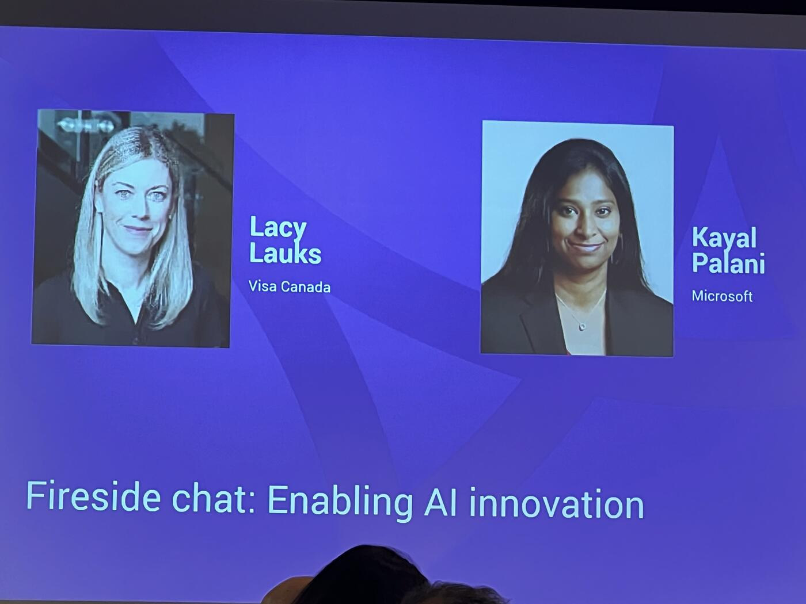

Making AI Adoption Practical and Governance-Ready
This fireside chat between Lacy Lauks and Kayal Palani focused on making AI adoption in payments practical, operational, and governance-ready rather than theoretical.
A few key themes stood out strongly from Kayal's remarks:
- AI is shifting from simple automation to orchestration
- Real-time payments require real-time reasoning and decisioning
- AI agents should be treated like governed digital employees
- Fraud defense must evolve because attackers are innovating faster
- Governance and infrastructure standards need to be embedded now, not later
Detection vs. Decisioning

One particularly important insight was the distinction between "detection" and "decisioning." Kayal emphasized that the industry has already become very good at fraud scoring and recommender systems over the past two decades. The real transformation now is about what institutions do with those signals instantly, in milliseconds, across increasingly complex payment environments.
Agents as Governed Digital Employees
Another major theme was agent governance. Kayal framed AI agents almost as organizational coworkers that require:
- Identities
- Policies
- Accountability
- Delegation controls
- Catalogs of permissions/actions
That framing aligns very closely with the broader industry movement toward agentic commerce, trusted AI execution layers, and governed autonomous systems.
The discussion also highlighted how Canada's evolving payment infrastructure — real-time rails, settlement modernization, collaborative intelligence sharing, and regulatory frameworks — creates the foundation for intelligent payment ecosystems.
Lacy Lauks brought the conversation back repeatedly to customer experience and trust, emphasizing that:
- Relevance matters more than novelty
- Practical use cases matter more than experimentation
- Invisible, seamless payment experiences are ultimately the goal
The "Uber-like" payment experience Kayal described — where payment disappears into the interaction itself — is becoming a central design pattern across the industry.
The Third Wave: Orchestration
Kayal described what he sees as the "third emerging wave" of AI in payments: bringing multiple specialized agents together into a shared orchestration and control plane.
Rather than relying on a single AI capability, he outlined a future where organizations deploy many coordinated agents across the entire payment lifecycle:
- Onboarding agents
- Verification agents
- Fraud agents
- Processing and money movement agents
- Dispute and chargeback agents
- Settlement orchestration systems
The critical challenge is not replacing legacy systems but integrating them into an intelligent orchestration layer:
"We are not going to rip and replace, reinvent the wheel."
Instead, the focus becomes:
- Preparing enterprise data for AI
- Integrating existing systems
- Enabling agents to communicate with each other
- Creating orchestration layers that coordinate workflows across hybrid environments
One of the strongest insights was his framing of orchestration as the real value layer of AI adoption. The value is not merely in having models or agents, but in coordinating them safely, intelligently, and transparently across enterprise workflows.
Why So Many AI Initiatives Fail
Lacy Lauks referenced a summit statistic showing that more than 80% of organizations are still not seeing meaningful value from AI implementations, prompting a discussion about why so many initiatives fail.
Kayal's answer was notably practical and operational rather than technical.
He argued that one of the biggest failures in AI adoption is beginning implementation before defining governance policies:
"What is it that you want your AI agent to be doing, deciding on? … What is it that it always should escalate?"
His recommendation was intentionally simple:
- Gather risk, compliance, engineering, product, and business teams together
- Map the workflow
- Define clear boundaries for autonomous decision-making versus mandatory human escalation
He emphasized repeatedly that organizations do not need advanced technology to start governance:
"It's pen and paper."
Accountability and Traceability
Kayal argued that AI agents must be treated as governed entities with:
- Registered identities
- Explicit permissions
- Escalation rules
- Action boundaries
- Evidence trails capable of reconstructing inputs, outputs, intermediate actions, and decision conditions
This "evidence backbone" was presented as essential for regulatory readiness and operational trust.
The discussion also highlighted the importance of:
- Centralized model governance
- Federated business-unit execution
- Regulatory alignment
- Collaborative intelligence sharing across Canada's financial ecosystem
Kayal repeatedly returned to the idea that Canada's cooperative regulatory environment is a competitive advantage rather than a constraint:
"They are there and you don't have to reinvent the wheel."
Real-Time Governance, Not Retrospective
The discussion then moved into what may become the defining operational challenge of AI-enabled payments: governing real-time autonomous systems safely inside highly regulated environments.
Kayal emphasized that the shift toward AI-driven decisioning fundamentally changes governance itself.
In traditional systems, governance and audit functions were often retrospective. In agentic systems operating on real-time payment rails, governance must itself become real time:
"Decisions require real-time policies, real-time governance."
One of the most important distinctions he introduced was between:
- Probabilistic systems underneath
- Deterministic controls on top
The AI models, fraud signals, and behavioral systems may continuously evolve probabilistically, but the governance and policy layers sitting above them must remain deterministic, explainable, and enforceable.
That dynamic creates a major organizational challenge:
- Policies must continuously evolve
- Governance cannot remain static
- Escalation rules must adapt in real time alongside changing fraud behaviors and operational conditions
Safe Implementation Practices
Kayal described several foundational requirements:
- Upstream identity and counterparty verification before money movement
- Enrollment and governance of AI agents
- Accountability mapping
- Continuous feedback loops
- Learning systems that incorporate overrides and human interventions back into governance frameworks
"Agent Bosses": Organizational Redesign
A particularly notable insight was his description of how organizational structures themselves may change because of AI agents.
Rather than traditional role-based organizational models, he suggested companies may move toward:
- Workflow-based structures
- Decision-centric management
- Human supervision of fleets of specialized agents
One of the more striking observations came when he described how future employees may enter the workforce managing powerful AI agents without prior experience leading human teams:
"They are going to be becoming agent bosses."
That comment captured a broader theme emerging throughout the summit: AI transformation is not simply technical modernization. It is organizational redesign.
Auditability, Pilots, and Visa's "Agentic Ready"
Lacy Lauks then connected the discussion back to trust, auditability, and gradual deployment. She highlighted the importance of:
- Audit-by-design approaches
- Evidence trails
- Human intervention points
- Pilot programs
- Staged deployment models
She referenced Visa's newly announced "agentic ready" initiative, positioning experimentation and controlled pilots as critical mechanisms for identifying where systems fail and where stronger controls or human oversight are still required.
Collaboration as a Requirement
Both speakers emphasized that the future agentic ecosystem cannot be built in isolation. The orchestration of AI agents across payments, fraud, identity, compliance, and settlement systems will require:
- Partnerships
- Shared governance models
- Interoperable standards
- Coordinated industry infrastructure
The fireside chat ultimately framed AI innovation in payments not as a single technology shift, but as the convergence of:
- Real-time rails
- Intelligent orchestration
- Autonomous agents
- Dynamic governance
- Cooperative ecosystem design
Successful AI adoption in financial services may depend less on model sophistication alone and more on whether institutions can build trusted operational frameworks around autonomous decision-making.
Back to First Principles
The fireside chat concluded with a surprisingly simple message after a highly technical discussion.
Kayal Palani closed the session by returning repeatedly to "first principles."
He encouraged attendees to begin with three foundational governance questions:
- What should AI agents be allowed to do?
- What should agents always escalate?
- What decisions must always remain under human accountability?
"Take down your pen and paper."
Kayal emphasized that before institutions deploy advanced AI systems, they need:
- Clear workflows
- Accountability structures
- Escalation rules
- Governance ownership
He also challenged attendees to return to their organizations and ask a fundamental operational question:
"Who in this organization is going to be governing the model review process?"
That governance-first framing reflected a broader shift visible across the Payments Canada Summit: the industry is increasingly moving from experimentation toward operationalization.
Lacy Lauks reinforced this perspective:
"We focus so much on the technology. It's more thinking about the workflow, the use case, and how you're going to change it."
The simplest recommendation may have been the most memorable:
Start with the workflow. Write the policies down. Define accountability before deploying autonomy.
Key Takeaways
- The next wave isn't more AI — it's orchestration: many specialized agents (onboarding, fraud, processing, disputes, settlement) coordinated by a control plane.
- "We are not going to rip and replace" — integration over reinvention.
- 80%+ of organizations still aren't seeing meaningful AI value — the cause is governance, not technology.
- "It's pen and paper" — start with workflows and escalation policies, not tools.
- Agents need registered identities, explicit permissions, evidence trails — treated as digital employees.
- Probabilistic systems underneath, deterministic governance on top. Real-time payments need real-time policies.
- Canada's cooperative regulatory environment is a competitive advantage, not a constraint.
- "Agent bosses" — junior employees may soon manage fleets of AI agents before ever managing humans.
- Visa's "agentic ready" initiative cited as a model for controlled pilots.
- Three first-principles questions: what can agents do, what must they escalate, what must humans always own.